SSDJ Safety Nets provides professional installation of balcony safety nets, pigeon safety nets, bird protection nets in Bangalore. Affordable prices, durable materials, and quick installation service.
provide safety net services across all areas of Bengaluru.
SSDJ Safety Nets is a trusted provider of high-quality safety and bird protection nets across Bengaluru. With years of hands-on experience, we specialize in balcony protection, anti-bird netting, construction and industrial nets, stairway and duct safety nets, and children & pet safety solutions. Our team focuses on durable materials, neat installation, and timely service, ensuring complete safety without affecting the building’s appearance. We take pride in offering affordable pricing, fast installation, and 100% customer satisfaction, making thousands of homes and businesses in Bengaluru safer every year.
SSDJ Safety Nets is one of the trusted providers offering safety nets near me in Bengaluru for homes, apartments, and commercial buildings. If you are searching for safety nets services near me or best safety nets in Bengaluru, we provide reliable and affordable solutions. We specialize in balcony safety nets near me, pigeon safety nets near me, children safety nets near me, and construction safety nets . Our safety nets are designed to protect families, children, pets, and workers by preventing accidents and ensuring complete safety. We use strong, durable, and weather-resistant materials, making us the right choice for customers looking for high quality safety nets near me. We provide professional installation services across Bengaluru with secure fixing and long-lasting performance. Choose SSDJ Safety Nets if you are looking for affordable safety nets or trusted safety net installation services in Bengaluru.
We proudly provide professional safety net installation services in Bengaluru across all major areas. Our team installs balcony safety nets, pigeon safety nets, children safety nets, and bird protection nets in Whitefield, Marathahalli, BTM Layout, Electronic City, HSR Layout, Sarjapur Road, Indiranagar, KR Puram, Hebbal, Yelahanka, Bannerghatta Road, Rajajinagar, Malleshwaram, Jayanagar, Banashankari, Yeshwanthpur and many nearby locations. If you are searching for safety nets in Bengaluru, SSDJ Safety Nets provides fast installation and reliable service across the city.
We provide safety net installation services across major areas of Bengaluru. If you are searching for safety nets in Bengaluru near me, our team serves the following locations:
We proudly offer safety net installation services across all major locations in Bangalore, including Whitefield, Marathahalli, BTM Layout, Electronic City, Hebbal, Yelahanka, Indiranagar, Jayanagar, Banashankari, Rajajinagar, and surrounding areas. If you are searching for safety nets in Bangalore services near me, our expert team ensures quick response, on-time installation, and reliable service anywhere in the city for homes, apartments, and commercial properties.
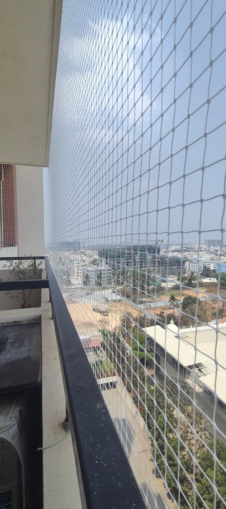
Professional balcony safety nets installation in Bengaluru to protect children, pets, and prevent accidental falls from balconies in apartments and homes.
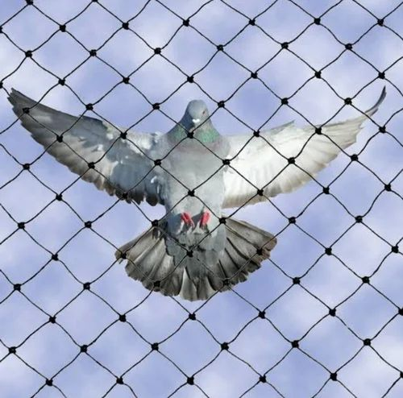
We provide anti-bird and pigeon safety nets installation in Bengaluru to protect balconies, windows, and open spaces. Our durable nets help keep your surroundings clean and bird-free.
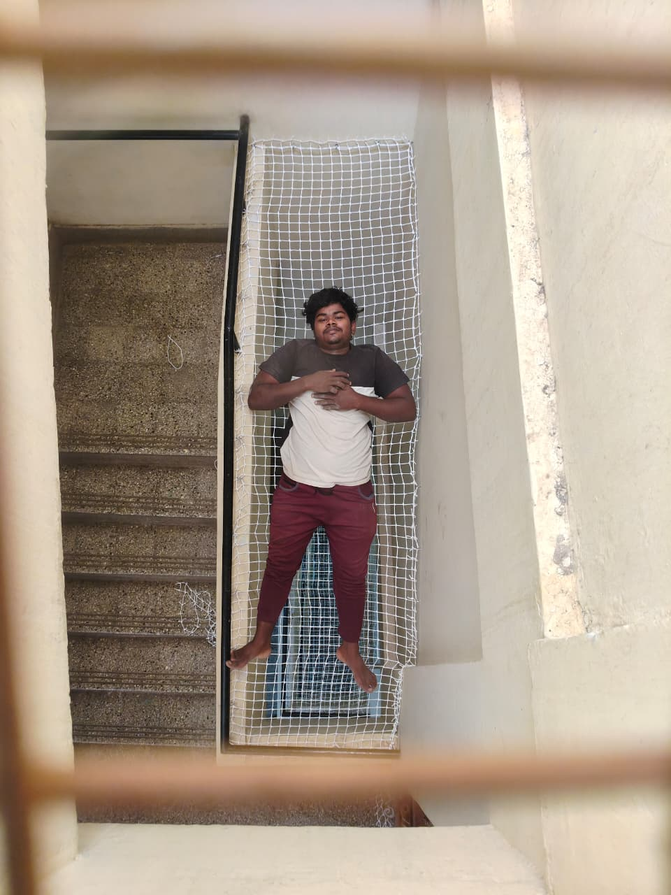
Professional children safety nets installation in Bengaluru to protect kids from balcony and staircase falls in apartments, homes, and residential buildings.
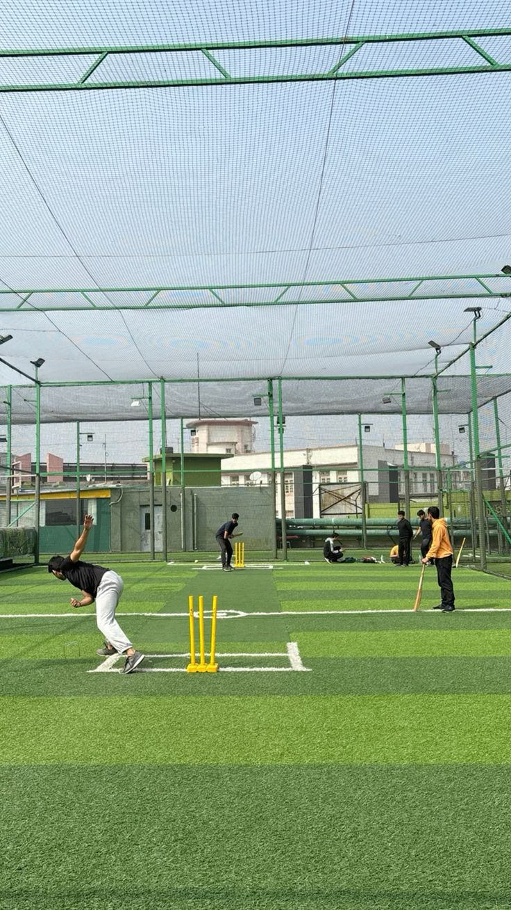
High-quality cricket practice nets installation in Bengaluru for schools, academies, and personal training grounds. Durable, weather-resistant cricket nets designed for safe and professional practice.
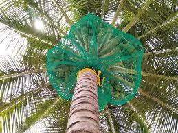
Strong and durable coconut tree safety nets installation in Bengaluru to protect coconut trees from birds, monkeys, and falling coconuts. Ideal for farms, gardens, and plantations.

Strong and durable construction and industrial safety nets installation in Bengaluru for building sites, parking areas, and industrial safety protection. Designed to prevent falling debris and ensure worker safety.

Ensure complete safety in your parking areas with our car parking safety nets in Bengaluru. Designed for apartments and commercial spaces, our durable nets prevent accidents and provide secure, long-lasting protection.

Professional terrace safety nets installation in Bengaluru to prevent accidental falls and improve safety for homes, apartments, and residential buildings. Our durable terrace nets provide reliable protection and long-lasting safety.

Professional swimming pool safety nets in Bengaluru to prevent accidental falls and improve safety for children, pets, and families. Our durable pool safety nets provide strong protection and long-lasting performance.

Professional monkey safety nets installation in Bengaluru to protect homes, balconies, gardens, and buildings from monkey intrusion. Our strong and durable nets help prevent damage and provide safe, long-lasting protection.

We offer industrial safety nets installation in Bengaluru for factories, warehouses, and construction areas. Our strong nets improve safety by preventing accidents and ensuring secure working environments.
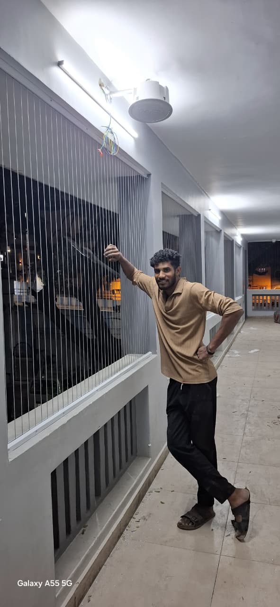
We provide invisible grill safety nets installation in Bengaluru for balconies and windows. Our strong and durable grills offer complete protection without blocking your view or affecting your home’s design.
Explore our recent safety net installations across Bengaluru including balcony safety nets, pigeon safety nets, children safety nets, industrial safety nets, and invisible grill protection. Our gallery showcases real projects completed for apartments, homes, and commercial buildings.
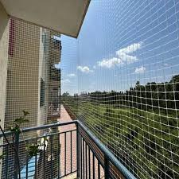
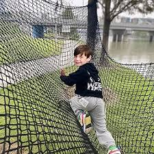
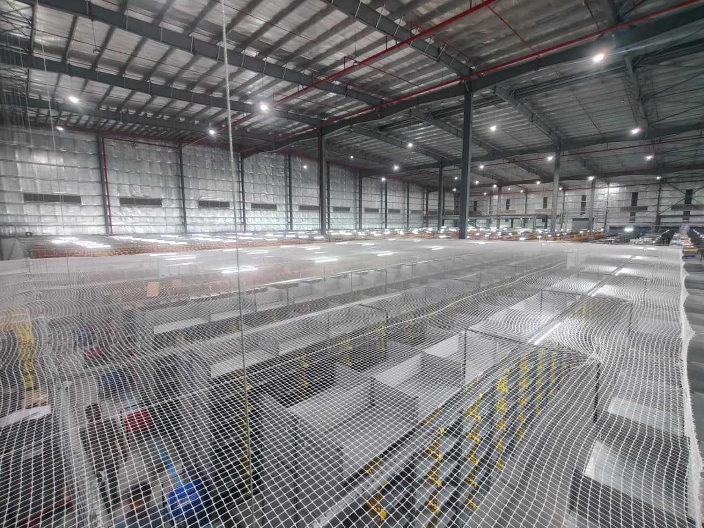
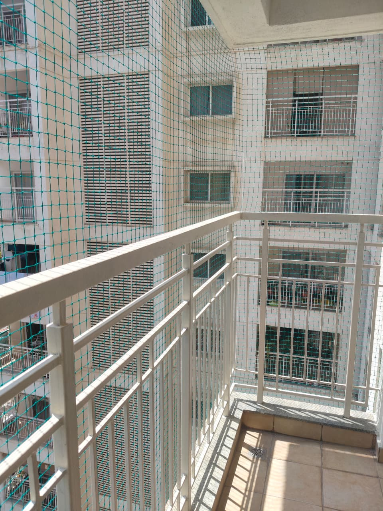


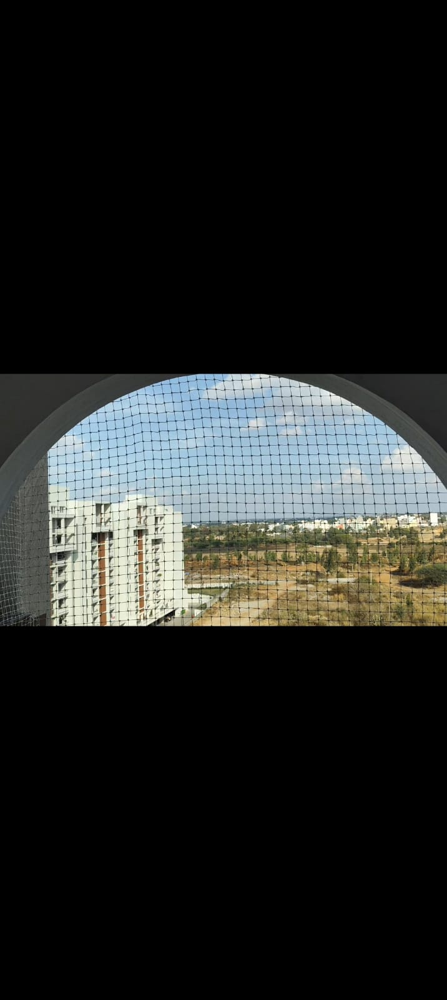
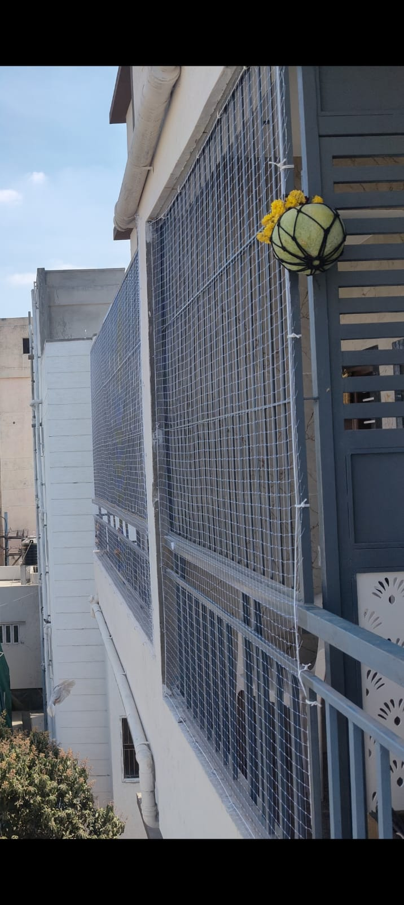
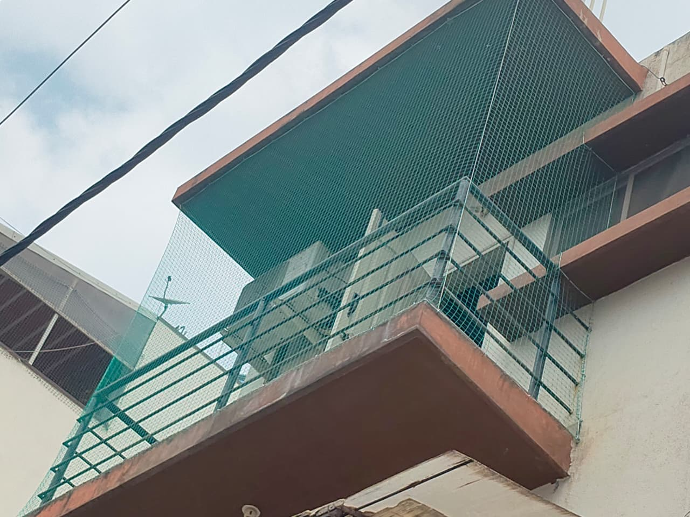
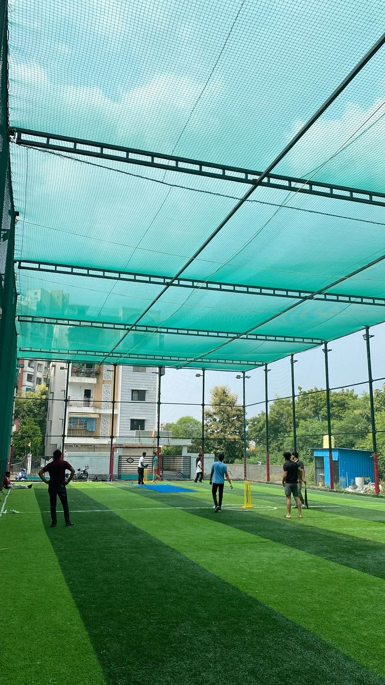
“Excellent balcony safety nets installation in Bengaluru. The team from Simhadri Safety Nets was very professional and completed the work quickly.”
“Very good pigeon safety nets service in Bengaluru. Quality materials and neat installation for our apartment balcony.”
“Affordable safety nets installation for our apartment. SSDJ Safety Nets provided strong child safety nets with perfect finishing.”
“Best safety nets installation service in Bengaluru. Quick balcony net installation and very friendly technicians.”
“Excellent balcony safety nets installation in Bengaluru. SSDJ Safety Nets team did a clean and secure job.”
“Professional pigeon safety nets installation for our home. Highly recommended safety nets service in Bengaluru.”
SSDJ Safety Nets, Bengaluru